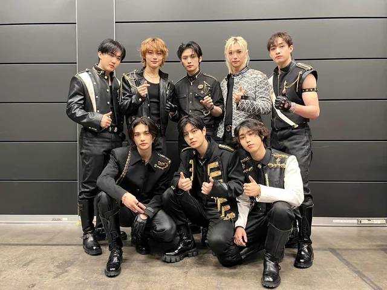

Landing
Landing
Resume
Games
Stray Kids
The Members

From left to right:
Front: Hyunjin, Seungmin, Han
Back: Changbin, I.N., Lee Know, Felix, Bangchan
Reasons I like this song:
The switching between English, Spanish, and Korean
The dance at the chorus is fun
The members' outfits
It's well produced for being filmed in 3 days
Ryan Reynolds and Hugh Jackman
Disney had no idea that they filmed with Stray Kids
Ryan Reynolds has been a fan of Stray Kids since they did a Deadpool inspired performance
Stray Kids have a song in the new Deadpool & Wolverine movie! (See underneath list)
The second prechorus in its entirety
The chorus in general